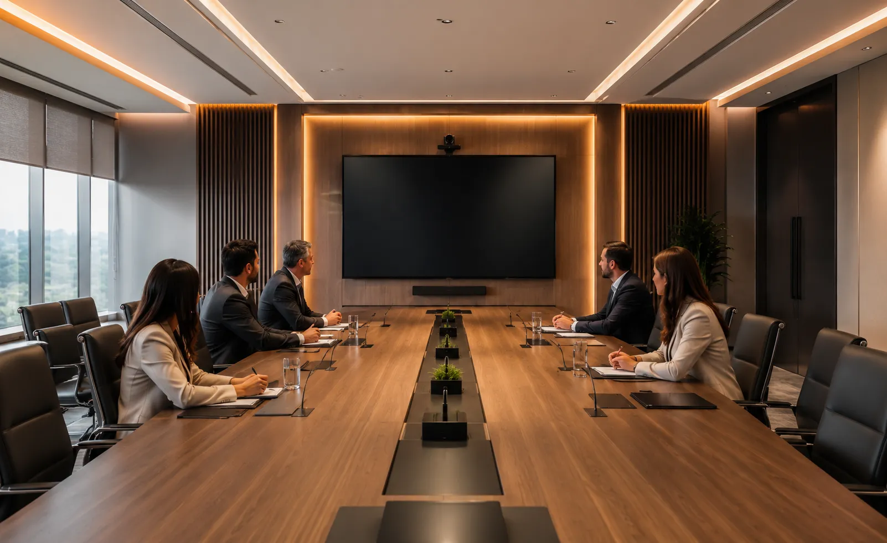
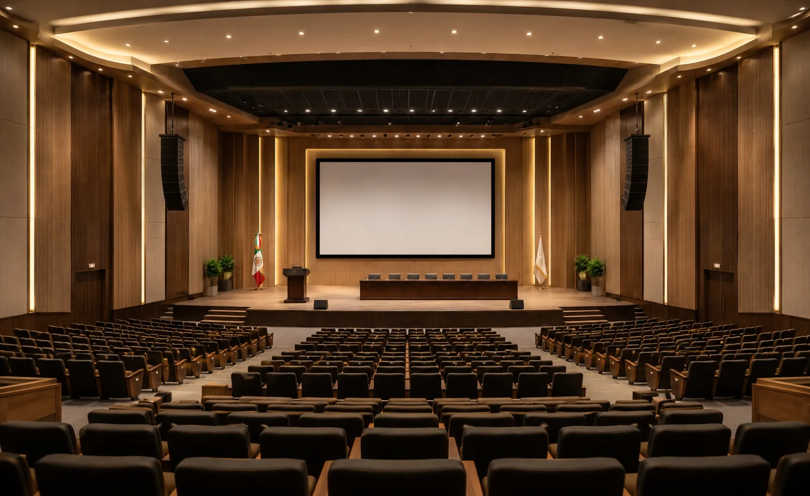
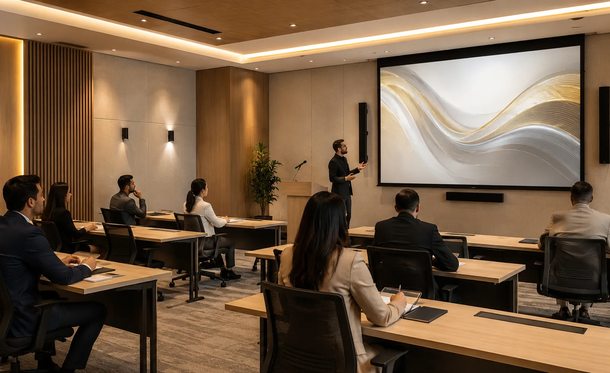
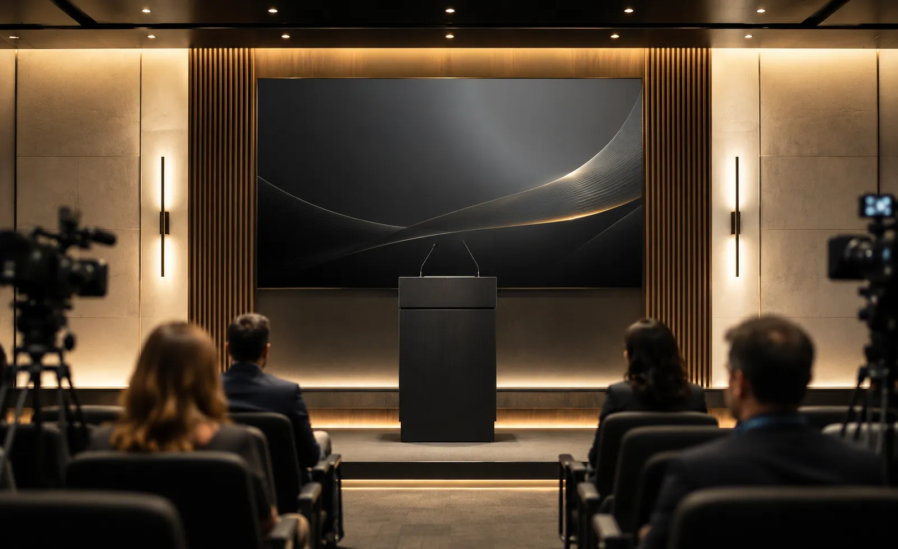
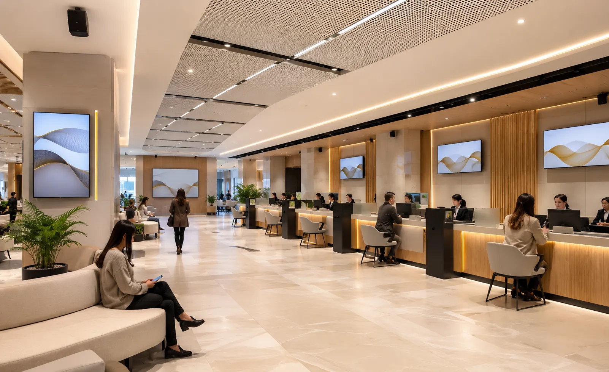
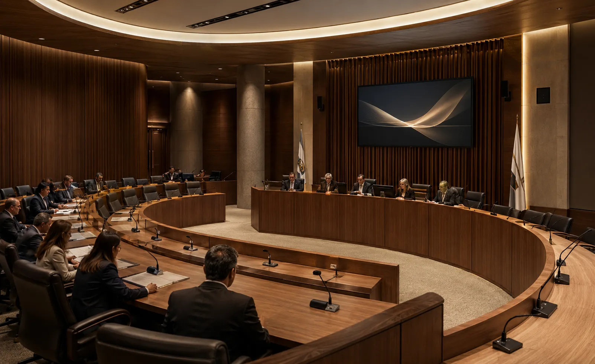

Audio y video para gobierno e instituciones: salas, cabildos y auditorios.
Diseñamos e integramos soluciones audiovisuales para salas institucionales,
cabildos, auditorios públicos, capacitación, salas de prensa y reuniones
híbridas.
Consideramos dimensiones, aforo, ruido, reverberación, cobertura,
visualización, microfonía, conectividad, grabación, transmisión, cableado, control y operación
antes de seleccionar equipos.
Los espacios institucionales necesitan tecnología que funcione con claridad y control
En una institución pública, reuniones, sesiones, presentaciones, capacitación y atención ciudadana requieren audio inteligible, visualización adecuada y una operación consistente.
En DG Audiosound integramos audio, microfonía, cámaras, pantallas, videoconferencia, grabación, transmisión, señal y control según el uso real de cada espacio.
La meta es que el sistema sea claro para el operador, mantenible para la institución y compatible con la infraestructura y protocolos definidos para el proyecto.
Inteligibilidad de voz
Microfonía, procesamiento y refuerzo sonoro definidos según cobertura, ruido y dinámica de la sala.
Operación estructurada
Fuentes, señal, micrófonos, cámaras y control se organizan para reducir pasos y facilitar el uso cotidiano.
Visualización adecuada
Pantallas o proyección se dimensionan según distancia, luz, resolución, contenido y ángulos de visión.
Infraestructura mantenible
Cableado, soportes, racks y conexiones se organizan para facilitar operación, servicio y futuras ampliaciones.
Una solución mal dimensionada puede comprometer sesiones, presentaciones y comunicación institucional
Cobertura de audio insuficiente, micrófonos inadecuados, imagen mal dimensionada, conexiones improvisadas o controles complejos pueden afectar la operación de salas, auditorios y sesiones institucionales.
La solución requiere definir aforo, ruido, reverberación, cobertura, nivel esperado, visualización, microfonía, cámaras, conectividad, grabación o transmisión cuando aplique, cableado, control y crecimiento futuro.
Audio poco claro
La inteligibilidad puede reducirse cuando no se consideran ruido, reverberación, distancia, cobertura y ubicación de micrófonos y altavoces.
Imagen insuficiente
La imagen debe dimensionarse por distancia, tamaño, resolución, brillo, contenido y posiciones de los usuarios.
Operación compleja
Una arquitectura de señal y control poco clara complica el inicio de sesiones, el cambio de fuentes y la participación remota.
Instalaciones improvisadas
Cables expuestos, soportes inadecuados o infraestructura improvisada complican seguridad, mantenimiento y continuidad operativa.
Integramos sistemas audiovisuales para espacios públicos, administrativos e institucionales
Evaluamos dimensiones, aforo, distribución, ruido, reverberación, cobertura, visualización, usuarios, plataformas, infraestructura y equipos existentes para definir audio, microfonía, cámaras, pantallas, señal, control y cableado.
Audio institucional
Altavoces, amplificación, procesamiento y microfonía dimensionados según cobertura, nivel requerido, ruido, reverberación y tipo de sesión.
Video y visualización
Pantallas, displays o proyección dimensionados según tamaño de imagen, distancia, luz ambiental, resolución y contenido.
Videoconferencia
Cámaras, microfonía, audio, pantallas y conectividad para reuniones híbridas, coordinación entre sedes y participación remota.
Instalación y control
Integramos cableado, soportes, conexiones, racks, configuración, pruebas y control según el alcance aprobado.
Soluciones audiovisuales para gobierno e instituciones públicas
Cada dependencia tiene espacios con necesidades distintas: salas de juntas, auditorios, cabildos, capacitación, salas de prensa, módulos de atención y áreas administrativas. Por eso diseñamos soluciones por uso, aforo y nivel de operación, no paquetes genéricos.
Audio para comunicación institucional
Altavoces, amplificación, procesamiento y distribución de audio definidos según cobertura, nivel, impedancia o línea 70/100 V cuando aplique y margen operativo.
Microfonía para salas y sesiones
Micrófonos de mesa, podio, mano, solapa, cuello de ganso o sistemas inalámbricos seleccionados según número de participantes, movilidad, cobertura y coordinación de frecuencias.
Pantallas y visualización profesional
Displays, pantallas o proyección para salas, capacitación, recepción, comunicación interna e información institucional, seleccionados según distancia y contenido.
Videoconferencia institucional
Cámaras, microfonía, audio, pantallas y conectividad para reuniones híbridas, coordinación entre sedes y sesiones con participantes externos.
Auditorios y capacitación
Refuerzo sonoro, microfonía, proyección o displays y control para auditorios, capacitación, informes, conferencias y presentaciones institucionales.
Control, cableado e instalación
Integramos soportes, cableado, conexiones, racks, configuración, pruebas y puesta en marcha según el alcance del proyecto.
Áreas de gobierno donde aplicamos audio y video profesional
Las soluciones audiovisuales para gobierno pueden aplicarse en espacios administrativos, públicos, de capacitación y comunicación institucional. El objetivo es que cada área tenga tecnología acorde a su función, aforo, nivel de uso y formalidad.

Salas de juntas institucionales
Auditorios públicos
Salas de capacitación
Salas de prensa
Atención ciudadana
Cabildos y sesiones públicasCómo trabajamos tu proyecto de audio y video
Un proceso estructurado para definir usuarios, cobertura, visualización, microfonía, conectividad, señal, control, instalación y operación antes de cerrar el proyecto.
Nos contactas
Cuéntanos si necesitas equipar una sala, auditorio, área de capacitación, atención ciudadana o espacio institucional.
Revisamos necesidades
Analizamos medidas, aforo, ruido, reverberación, visualización, conectividad, operación, infraestructura y equipos existentes.
Diseñamos la solución
Definimos audio, microfonía, cámaras, visualización, videoconferencia, grabación o transmisión cuando aplica, cableado y control.
Propuesta clara
Te entregamos alcance, equipos, servicios, tiempos, supuestos, exclusiones y pendientes técnicos por confirmar.
Instalamos
Realizamos montaje, cableado, conexión, configuración, pruebas y ajustes conforme al alcance aprobado.
Te capacitamos
Explicamos las funciones y la operación básica al personal responsable del sistema.
No seleccionamos equipos aislados: dimensionamos la solución audiovisual para la operación institucional
Cada sala debe analizarse como un sistema: cobertura, microfonía, visualización, cámaras, señal, red, cableado, alimentación, control, seguridad de montaje y mantenimiento.
Nuestro enfoque combina ingeniería audiovisual, integración, instalación, configuración y capacitación básica con criterios de compatibilidad, capacidad operativa y crecimiento futuro.
Una decisión profesional para tu institución
- Asesoría personalizada
- Propuesta formal
- Equipos originales
- Instalación profesional
- Integración formal y ordenada
- Capacitación básica de uso
- Acompañamiento técnico
Marcas profesionales para soluciones de alto rendimiento
Seleccionamos tecnología profesional según cobertura, procesamiento, visualización, conectividad, compatibilidad, operación y presupuesto del proyecto.
Preguntas frecuentes sobre audio y video para gobierno
Resolvemos tus dudas principales para ayudarte a planear e invertir con total tranquilidad y claridad técnica.
Puede incluir audio, altavoces, amplificación, procesamiento, microfonía, pantallas o proyección, cámaras, videoconferencia, grabación, transmisión, cableado, racks, control, instalación y capacitación básica. El alcance depende del espacio y uso.
Sí. Podemos diseñar e instalar soluciones para salas de juntas, salas de consejo, salas de capacitación, cabildos, auditorios, atención ciudadana y espacios administrativos.
Depende del tamaño del espacio, iluminación, distancia de visualización, resolución, contenido, uso diario, mantenimiento y presupuesto. La selección debe hacerse con esos datos.
Sí. Integramos cámaras, micrófonos, bocinas, pantallas y conectividad para reuniones híbridas, capacitación remota, coordinación entre sedes y sesiones con participantes externos.
Sí. El diseño puede coordinar cableado, soportes, ubicación de equipos, racks, conexiones y puntos de control para mantener una instalación ordenada y mantenible.
Sí. Para definir el alcance revisamos medidas, aforo, uso, plataformas, audio, visualización, microfonía, infraestructura, equipos existentes y crecimiento previsto antes de preparar la propuesta.
Diseñemos el audio y video de tus espacios institucionales
Cuéntanos qué espacio necesitas equipar y revisamos medidas, aforo, audio, microfonía, visualización, plataformas, infraestructura y equipos existentes.
Hablemos de tu
proyecto institucional
Platícanos si se trata de una sala institucional, cabildo, auditorio, capacitación, sala de prensa o atención ciudadana. Podemos orientarte sobre audio, microfonía, visualización, videoconferencia y control.
Solicita asesoría para tu proyecto institucional
Completa el formulario y se abrirá WhatsApp con la información estructurada. Incluye medidas, aforo, uso, plataformas y equipos existentes cuando los conozcas.